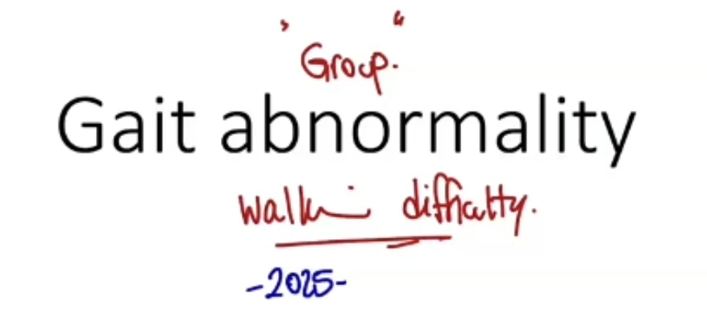
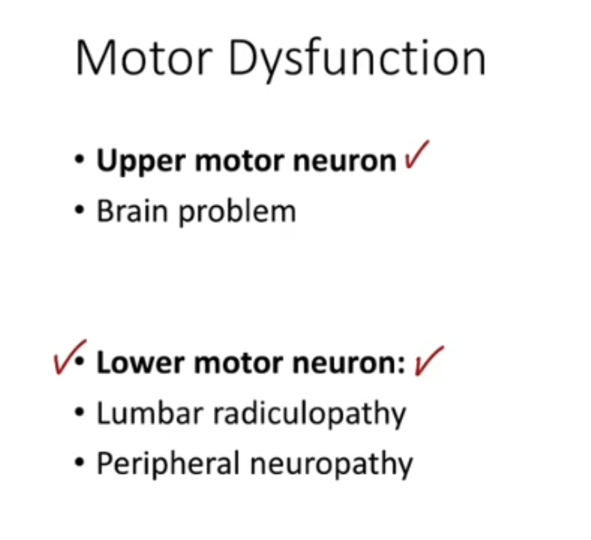
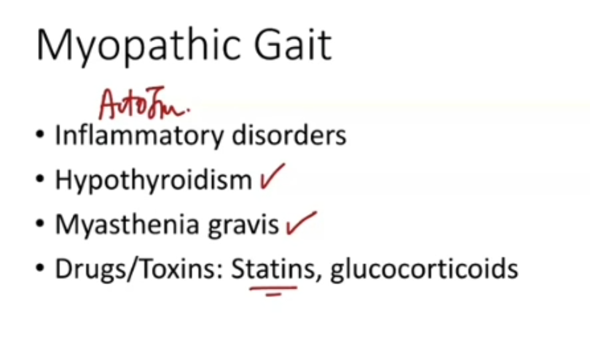
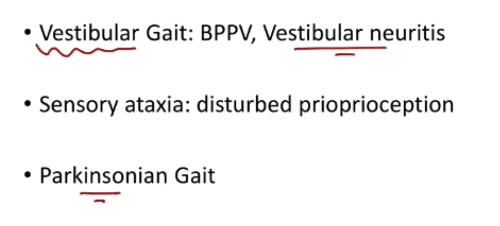
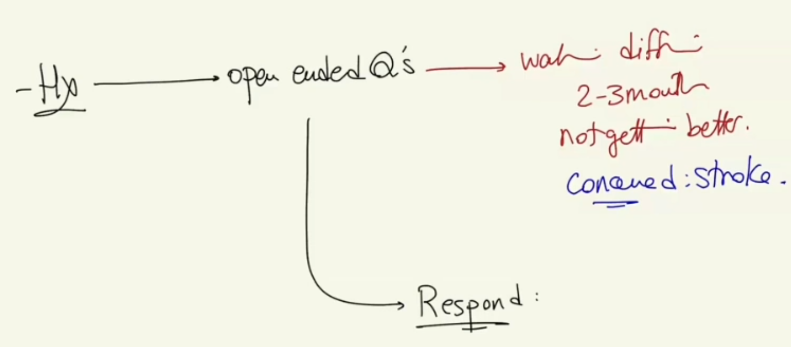
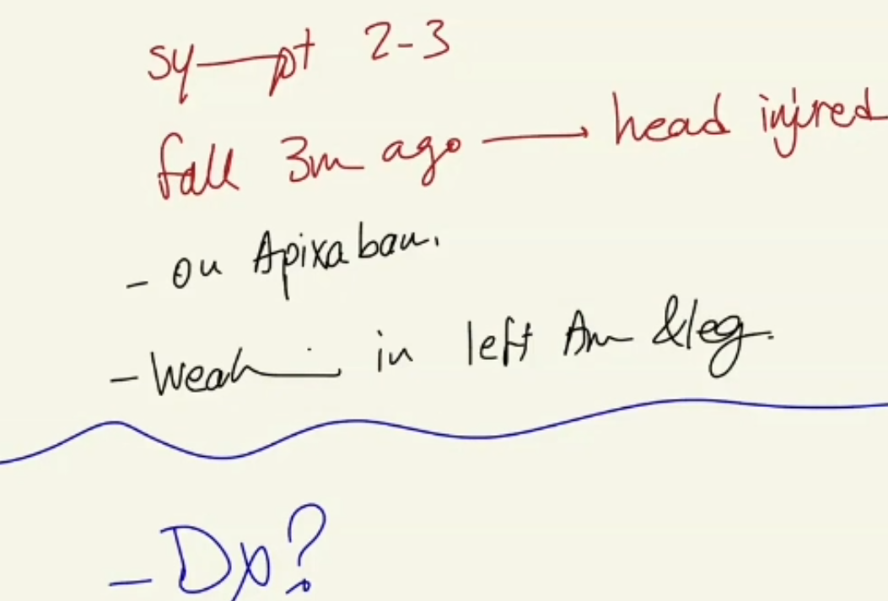
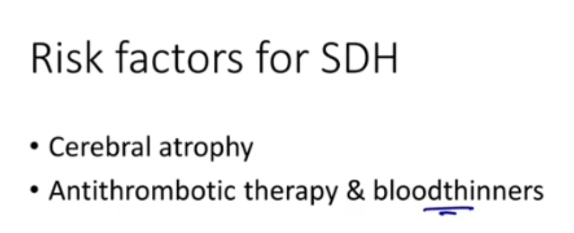

Gait Abnormality (Chronic Subdural Haematoma presenting as walking difficulty)
Source: Dr. Amir workshop — Med workshop 2 - 2026 / CLASS 2 NEUROLOGY (Aug 2026 drop) · Specialty: neurology
Overview
Walking-difficulty cases have run for the last two years, all presenting with a vague complaint of difficulty walking. The stem here voices a specific concern about stroke. Walking difficulty is a non-specific presentation, so the first task is to clarify exactly what the patient means – painful walking, weakness/inability to move the leg, or a balance problem – and then work through a broad, grouped differential list.
Differential Framework
To move the legs you need functioning nerves, muscles, coordination (cerebellum/vestibular system) and an intact musculoskeletal system, plus adequate vision and hearing. Group the differentials accordingly:
- Upper motor neuron (brain): stroke, TIA, intracranial haemorrhage, brain tumour
- Lower motor neuron: lumbar radiculopathy, cervical myelopathy, peripheral neuropathy, traumatic nerve injury
- Muscle: inflammatory myositis (polymyositis, dermatomyositis), hypothyroid myopathy, myasthenia gravis, drug/toxin myopathy (statins, steroids), rhabdomyolysis
- Cerebellar: stroke/tumour, alcoholic cerebellar degeneration
- Vestibular: vestibular neuritis, labyrinthitis, Meniere disease
- Musculoskeletal / antalgic: arthritis, tendonitis
- Falls / geriatric contributors: vision and hearing impairment, medication side effects, home hazards
History Taking
Open-ended question, then respond to the stroke concern. Clarify the complaint: is it pain, difficulty moving the legs, or a balance problem? This patient reports weakness of the entire leg.
- Timing: first episode or recurrent, constant or intermittent, diurnal variation (myasthenia gravis is worse at the end of the day), progression
- Aggravating/alleviating factors and affect on daily function
- UMN (stroke/TIA): loss of consciousness/fainting, slurred speech, blurred vision, other weakness (patient reports left arm and leg weakness), sensory deficit (numbness, pins and needles)
- Brain tumour: headache, early-morning vomiting, weight loss
- Head injury: any fall or head injury (patient had a fall 2-3 months ago); probe for head/neck/back injury, post-injury vomiting, loss of consciousness, and anticoagulant use (patient is on apixaban)
- LMN: neck or back pain (radiculopathy, cervical myelopathy), bladder/bowel disturbance, leg trauma
- Muscle: leg pain, rashes/joint pain (autoimmune), stiffness (polymyalgia rheumatica), cold intolerance/family thyroid disease (hypothyroidism), diplopia worse end of day (myasthenia), medications (statins), recent exercise (rhabdomyolysis)
- Parkinson disease: hand tremor, bradykinesia
- Cerebellar/vestibular: balance problems, alcohol/drug use, hearing loss, tinnitus, nausea/vomiting
- Geriatric screen: vision/hearing, recurrent falls, home hazards (stairs, rugs, slippery surfaces), support at home; optionally mood and memory
Fall and Head-Injury Red Flags
When a fall with head injury is disclosed, probe specifically for injury to the head, neck and back (sites that produce a neurological deficit), post-injury vomiting and loss of consciousness, and anticoagulant use. This patient is on apixaban, which markedly raises the risk of intracranial bleeding after even minor head trauma.
Findings and Diagnosis
Key findings: symptoms for 2-3 months, a fall 3 months ago with a head strike, on apixaban, and left arm and left leg weakness compared with the right. No other examination provided.
Provisional diagnosis: chronic subdural haematoma. This is the intracranial haemorrhage that characteristically evolves slowly over months. Risk factors include cerebral atrophy (extra space allows slow bleeding without acute symptoms), older age and anticoagulation. Features include headache, light-headedness, weakness and gait ataxia (commonly presenting as walking difficulty after a delay).
Explanation to patient: a slow bleed around the brain triggered by the head injury, with the risk increased by blood thinners. Reasons: one-sided left arm and leg weakness (a brain problem), the head-injury history, anticoagulant use, and exclusion of other differentials.
Differential Diagnosis Summary and Addressing the Stroke Concern
UMN: stroke, brain tumour, other intracranial haemorrhage. LMN: lumbar radiculopathy, traumatic nerve injury. Muscle: polymyalgia/myositis, hypothyroidism, statin-induced myopathy. Balance: cerebellar degeneration, vestibular neuritis, labyrinthitis, Parkinson disease. Antalgic: arthritis.
Address the specific stroke concern: it is less likely because there were no visual or speech problems, no numbness, and no loss of consciousness, and the symptoms are linked to the fall. Confirm that this will be investigated further.
Case Figures

















🔬 Expert Review & Enhancements
Reviewed by: history-taking-expert (Australian clinical supervisor) · fact-checked against the irStudy medical textbook RAG index.
✏️ Corrections
An elderly, anticoagulated patient with a new focal neurological deficit after a head injury is a neurosurgical emergency. Arrange an immediate (same-visit) non-contrast CT head, check coagulation, withhold apixaban and discuss reversal (andexanet alfa or prothrombin complex concentrate) and neurosurgical referral. Investigation should not be deferred.
Polymyalgia rheumatica causes proximal (shoulder and hip girdle) pain and stiffness with a raised ESR/CRP; it does not cause true (objective) muscle weakness or a raised CK. It should be distinguished from inflammatory myositis (polymyositis/dermatomyositis), which does cause weakness.
⭐ Suggested Enhancements
🏷️ Metadata
📚 Reference Citations (RAG)
Churchills Pocketbook of Differential Diagnosis p.529 qdrant:f3b17738-0010-4d73-a261-45f44e27f298
John Murtagh General Practice, 8th Edition p.229 qdrant:c4c0c7c3-11ce-41ad-b015-a13ca14f48ba
John Murtagh General Practice, 8th Edition p.3578 qdrant:d238ec04-7c18-4316-b05d-7657e47a3c85